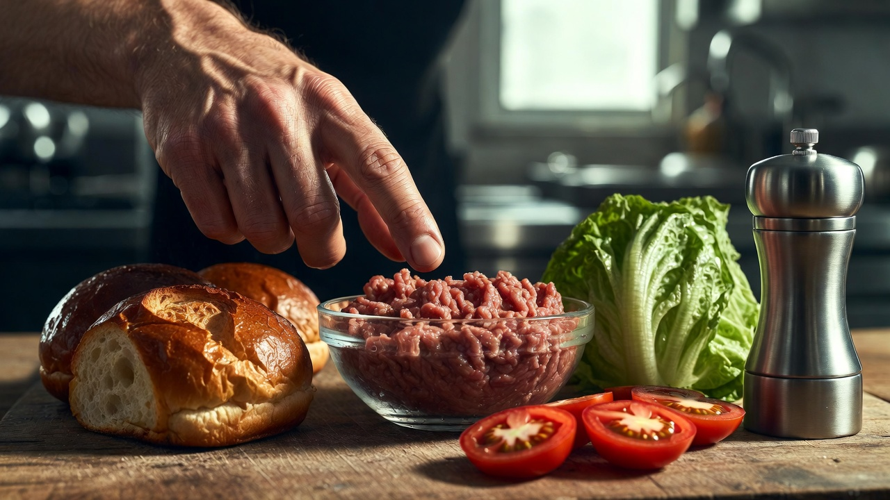
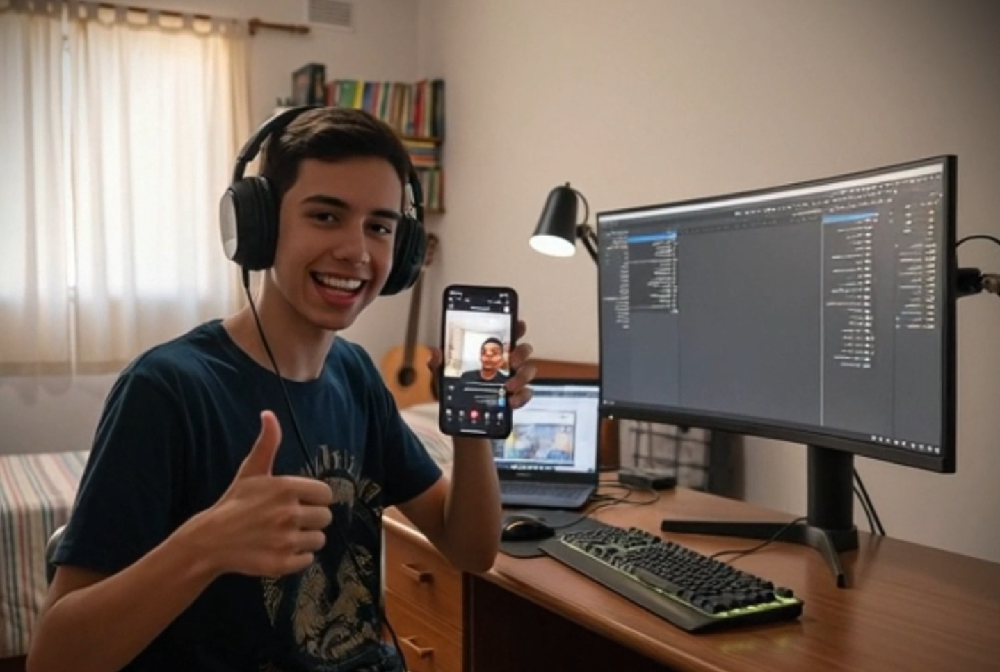
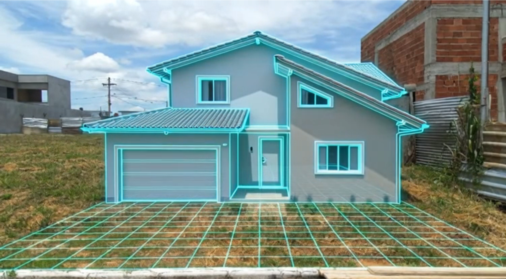

Transforme sua Marca
com a Mídia do Futuro
A Crieiti é uma plataforma de desenvolvimento em Direção Criativa Digital, especializada em produtividade com IA.
Direção Digital
Três direções integradas de alta tecnologia para escalar seu negócio e dominar o mercado.
Mentoria e Gestão Digital
Programa de desenvolvimento focado em estruturação estratégica digital, funil e canais de crescimento.
- ✦ Mentoria Prévia Gratuita
- ✦ Mapeamento Completo de Funil
Imersão em Branding Estratégico
Desenvolvimento estratégico de marca com metodologia estruturada, aplicação prática e direcionamento executivo.
- ✦ Posicionamento de Marca
- ✦ Direção de Arte High-End
Estúdio Digital com IA
Programa de desenvolvimento prático em direção criativa e construção de narrativas cinematográficas com inteligência artificial aplicada.
- ✦ Narrativas Cinematográficas AI
- ✦ Crescimento Exponencial
Existe uma engenharia exata para que sua empresa nunca pare de vender.
Transforme ideias em vídeos, vídeos em audiência e audiência em vendas.
Atenção
Atrair o público qualificado com precisão cirúrgica.
Engajamento
Gerar conexão profunda e autoridade irrefutável.
Monetização
Convertendo leads em faturamento consistente.
Retenção
Maximizar o valor de cada cliente através de ciclos.
Produções
Explore nossos projetos desenhados para reter atênção.

Burgerverso
Propaganda
Aprenda I.A
Criativo
Construção com I.A
IdéiaPronto para iniciar a transformação?
Agende uma mentoria de gestão criativa e domine o uso de Inteligência Artificial e design de alto nível para escalar sua autoridade digital.
Direcionamento estratégico
Arquitetura de fluxos e mapeamento de funil de alta conversão. Estratégias validadas para otimizar canais através de dados precisos.

Sessão Estratégica
Agende uma conversa gratuita para entendermos seu cenário atual e traçarmos o melhor caminho.
Mentoria de Implementação e Gestão de Performance
Acompanhamento estratégico para ativação da metodologia, com análise técnica de métricas e suporte gerencial para otimização de resultados.
Imersão em Branding Estratégico
Direção Estratégica de Identidade e Posicionamento Visual
Sessão Estratégica
Agende uma conversa gratuita para entendermos seu cenário atual e traçarmos o melhor caminho.
Arquitetura de Identidade e Inteligência de Marca
Estruturação integral da presença visual com curadoria de dados de mercado e ajuste estratégico contínuo para máxima percepção de valor.
Direção Criativa com IA
O futuro do audiovisual. Unimos direção de arte humana com inteligência artificial generativa para o desenvolvimento prático em direção criativa e construção de narrativas cinematográficas.

Sessão Estratégica
Agende uma conversa gratuita para entendermos seu cenário atual e traçarmos o melhor caminho.
Direção de Sistemas e Inteligência Criativa
Arquitetura digital estruturada com monitoramento estratégico e otimização contínua baseada em dados.